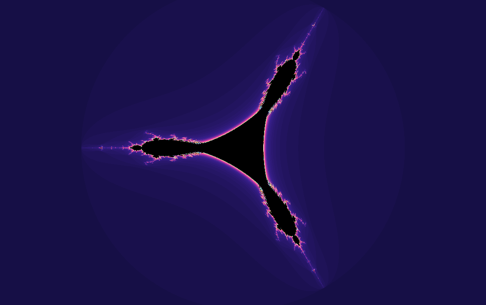
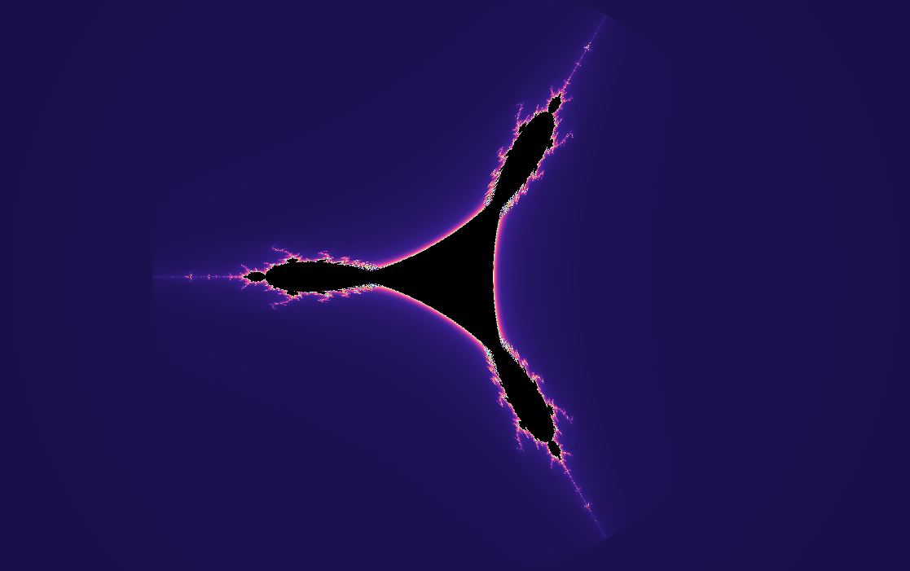
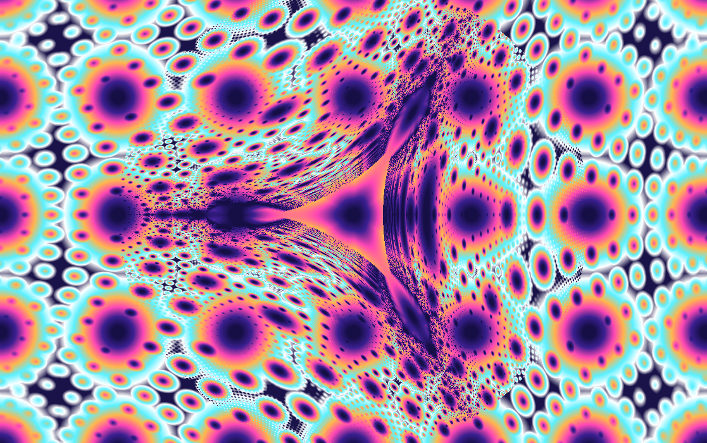
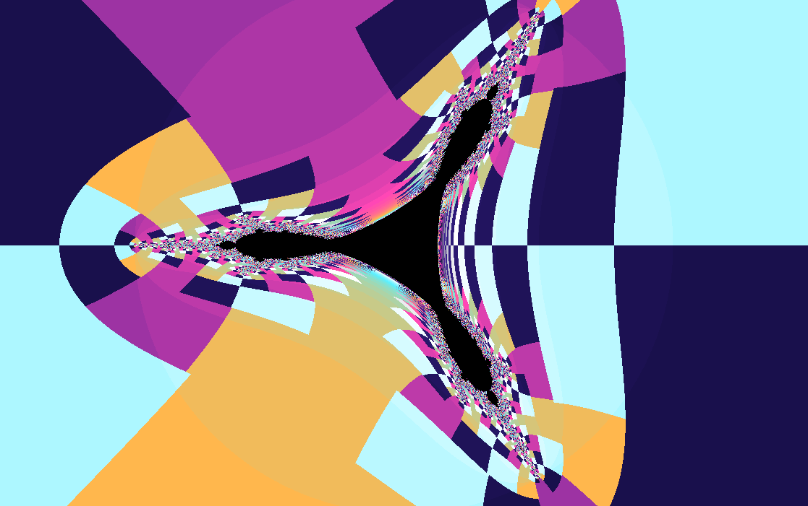
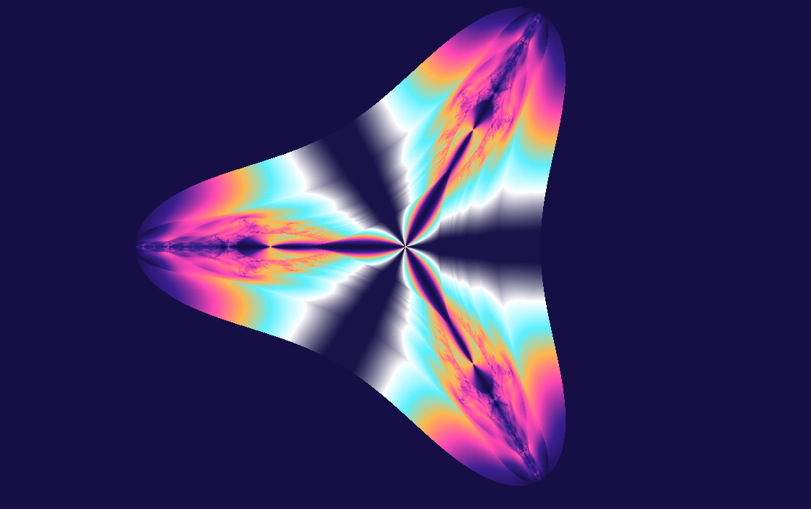
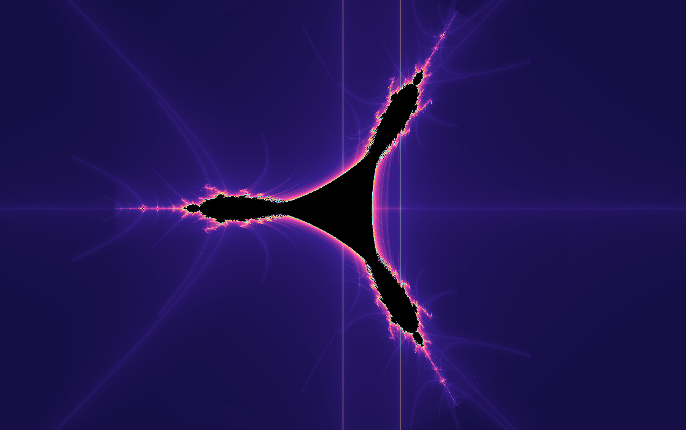

Fractal gallery
Tricorn
A three-cornered mirror version of the Mandelbrot set.
\(z_0=0,\quad z_{n+1}=\overline{z_n}^{\,2}+c\)
The Tricorn, also called the Mandelbar set, conjugates \(z\) before squaring it. That reflection changes the familiar cardioid world into a shape with three stubborn corners and mirrored branching.
Also known as Mandelbar, this fractal was created by Crowe, Hasson, Rippon and Strain-Clark in 1989.

What to try first
Compare the complete shape with the Mandelbrot set. It feels related, but every lobe seems to have been turned through a mirror.
Zoom near a corner. The Tricorn is famous for parameter-space structures that do not behave like the analytic Mandelbrot family.
Try escape angle coloring to emphasize the reflected exterior flow.
Mathematical notes
The conjugate square
wxChaos iterates \(z_{n+1}=\overline{z_n}^2+c\), starting at \(z_0=0\). Complex conjugation changes \(x+iy\) into \(x-iy\). This reflection makes the map anti-holomorphic rather than holomorphic, which is why it belongs to the Mandelbar family rather than the ordinary Mandelbrot family.
Coloring lenses
The set stays the same, but each rendering method asks a different question about the orbit.


Gaussian integer
Measures how closely escaping orbits pass near the complex integer lattice.
Apply in wxChaos

Triangle inequality
Turns relationships inside the orbit into layered, topographic texture.
Apply in wxChaos
Orbit traps
Colors points by how closely their orbits pass near the real and imaginary axes.
Apply in wxChaos